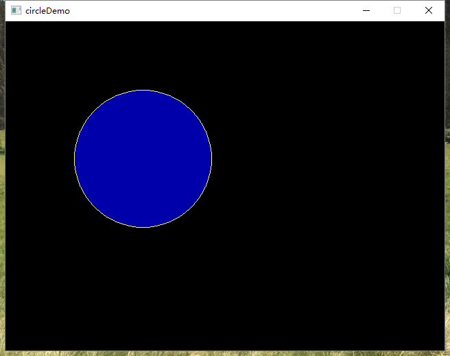
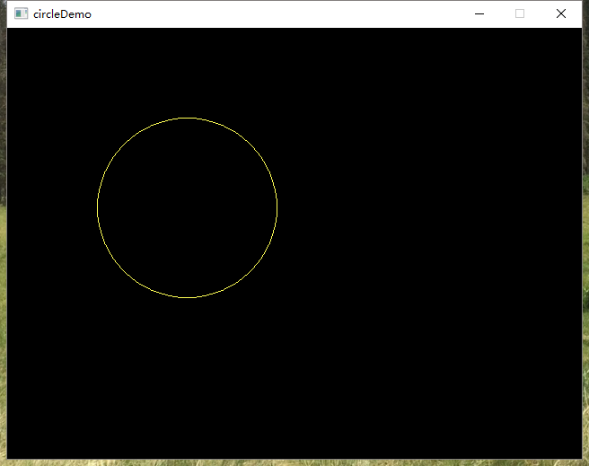
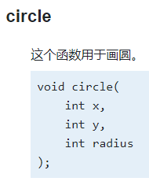
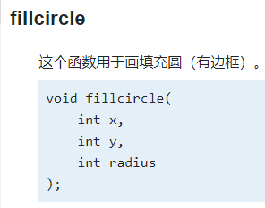

官网：https://www.easyx.cn/
在线帮助文档：https://docs.easyx.cn/
目标：生成一个边框为黄色，填充为蓝色的圆

遇到的问题：使用以下代码，只能生成边框为黄色的圆，蓝色没有填充上。调整setfillcolor(BLUE);的位置，放在circle函数后面填充，发现还是不行。
#include <graphics.h> // 引用图形库头文件 #include <conio.h> int main() { initgraph(640, 480); // 创建绘图窗口，大小为 640x480 像素 setlinecolor(YELLOW); // 边框为黄色 setfillcolor(BLUE); // 填充为蓝色 circle(200, 200, 100); // 画圆，圆心(200, 200)，半径 100 _getch(); // 按任意键继续 closegraph(); // 关闭绘图窗口 }

解决办法：查看文档，发现这是因为使用的是circle函数，使用fillcircle函数即可解决。
circle函数只用于画空心圆，fillcircle函数用于画填充圆。
 
https://docs.easyx.cn/#circle https://docs.easyx.cn/#fillcircle
把circle(200, 200, 100);换成fillcircle(200, 200, 100);问题解决
#include <graphics.h> // 引用图形库头文件 #include <conio.h> int main() { initgraph(640, 480); // 创建绘图窗口，大小为 640x480 像素 setlinecolor(YELLOW); // 边框为黄色 setfillcolor(BLUE); // 填充为蓝色 fillcircle(200, 200, 100); // 画圆，圆心(200, 200)，半径 100 _getch(); // 按任意键继续 closegraph(); // 关闭绘图窗口 }